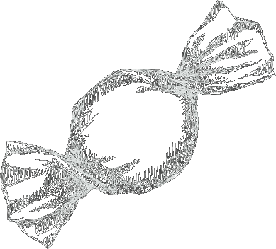
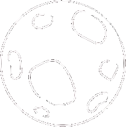

Psychocandy
The Jesus and Mary Chain
1985 • 14 songs • 38:29
Genres: Noise Pop, Post-Punk
Shoegaze
The noise feedback in Psychocandy hints at something darker, more serious and more frustrating than what the fluffy pop songs underneath would imply by themselves.
This album is noisy, apathetic, dissonant and melodic.

Similar, but more noisy and playful